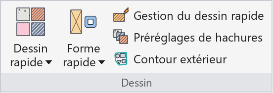
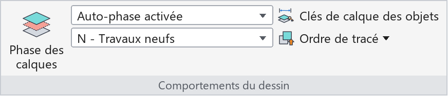
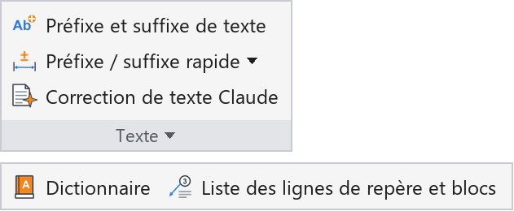
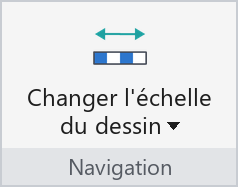
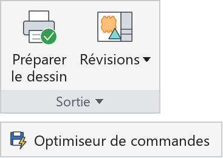
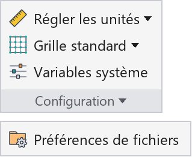

Ruban
| Fichier source | Resources\DynALisp.cuix (l'onglet) et Resources\DynALisp.Ribbon.dll (ses listes déroulantes) |
| Requis | AutoCAD pour Windows; les listes déroulantes demandent AutoCAD 2025 ou suivant |
| Licence | Licence publique générale GNU v3 |
Description
L'onglet DynALisp du ruban a un bouton pour chaque outil du module Dynalisp, avec son icône propre, dans un groupe de fonctions par groupe d'outils, et les commandes du noyau dans le groupe DynALisp. AutoCAD le charge avec DynALisp : il n'y a rien à configurer. Il est dans la langue de l'AutoCAD installé, quelle que soit la langue (Language) de Dyl-Settings, qui est celle des docs seulement : dans un AutoCAD français, ses groupes de fonctions, boutons, info-bulles et listes déroulantes (AutoCAD 2025 et suivants; en anglais dans une version antérieure). Cette page cite les libellés français; les images ci-dessous montrent l'onglet en français.
Groupes de fonctions
L'onglet entier, puis chaque groupe de fonctions avec sa partie déroulante ouverte sous son titre. Les listes déroulantes montrent des valeurs d'exemple.

Dessin

Dessin rapide, Forme rapide, Gestion du dessin rapide, Préréglages de hachures, Contour extérieur.
Comportements du dessin

Phase des calques et ses listes déroulantes Auto-phase et Phase, Clés de calque des objets, Ordre de tracé.
Transfert de calques

Transférer et ses listes déroulantes Niveau, De et À, Gestion.
Outils de calques

Clés de calque, Créer des calques, Importer des calques d'un CSV, Filtres de calques, Groupes de calques, Importer des filtres de calques. Dans la partie déroulante : Liste des calques dessinée, Exporter les calques en CSV, Couleurs de plumes des calques, Couleur et épaisseur des calques.
Texte

Préfixe et suffixe de texte, Préfixe / suffixe rapide, Correction de texte Claude. Dans la partie déroulante : Dictionnaire, Liste des lignes de repère et blocs.
Nettoyage

Couleur DuCalque, Liaisons de données, Blocs DuBloc.
Navigation

Sortie

Préparer le dessin, Révisions. Dans la partie déroulante : Optimiseur de commandes.
Configuration

Régler les unités, Grille standard, Variables système. Dans la partie déroulante : Préférences de fichiers.
Utilitaires

Sélection rapide semblable, Groupes par proximité, Dégrouper l'imbriqué, Ligne en polyligne, Couleur du calque à l'objet, Réinitialiser l'échelle des types de ligne. Dans la partie déroulante : Fenêtre vers l'espace papier, Insertion par lot, Compte par calques, Reconstruire les motifs, Ouvrir un dossier.
Dépannage

DynALisp

Paramètres, Suite, Fichiers utilisateur, Info, Docs. Dans la partie déroulante : Recharger.
Boutons
- La flèche d'un bouton liste les préréglages de son outil (les phases, les échelles de dessin, les unités...), sa commande principale en premier. Le bouton lance ensuite le dernier élément choisi, comme le bouton Cercle d'AutoCAD.
- La flèche du bouton Dessin rapide liste Tous et les groupes des préréglages : la galerie s'ouvre sur le groupe choisi.
- Les outils moins utilisés sont dans la partie déroulante de leur groupe de fonctions : la flèche à côté de son titre.
- Un bouton dont l'outil agit sur les objets sélectionnés (Transférer) garde la sélection; les autres boutons annulent d'abord la commande en cours.
- Survolez un bouton pour voir sa description.
Listes déroulantes
Deux groupes de fonctions ont des listes déroulantes qui montrent le réglage du dessin, comme la liste déroulante Calque d'AutoCAD :
- Comportements du dessin – l'auto-phase et la phase active du dessin courant (voir Layer Phase). Choisir un élément l'applique.
- Transfert de calques – le niveau (Niveau), la valeur d'origine (De) et la valeur visée (À) du transfert (voir Layer Transfer). Leurs listes suivent les calques du dessin. Choisir une valeur ne fait que la retenir : le bouton Transférer l'exécute. Les choix sont gardés pour la session.
Elles montrent toujours l'état courant, quoi qui l'ait changé (un alias, une fenêtre, un autre dessin devenu courant).
Notes
- Les listes déroulantes et la traduction de l'onglet sont faites par Resources\DynALisp.Ribbon.dll, qui demande AutoCAD 2025 ou suivant. Dans une version antérieure, l'onglet est en anglais et n'a que ses boutons : le bouton Layer Phase ouvre sa fenêtre, et le bouton Transfer demande le niveau et les valeurs.
- Un outil désactivé dans Dyl-Suite répond Unknown command quand on clique son bouton.
- Les listes déroulantes ne changent que quand AutoCAD est inactif, sans commande en cours : après une commande, elles peuvent prendre un moment à montrer le nouvel état.
- Un problème des listes déroulantes affiche à la ligne de commande une ligne qui commence par DynALisp ribbon:.
Construire le ruban
Pour qui modifie DynALisp : l'onglet est généré, jamais modifié dans l'éditeur CUI.
- Installer\Ribbon\BuildRibbon.py écrit DynALisp.cuix à partir de Installer\Ribbon\Ribbon.csv (les groupes de fonctions et les boutons), de RibbonIcons.py (les icônes) et de Resources\StartupSuite.csv (les noms, descriptions et commandes enfants). Il signale une commande principale absente du ruban ou sans icône. --sheet <fichier.png> dessine chaque icône sur le ruban clair et le ruban foncé.
- Les textes de l'onglet en français sont dans Installer\Ribbon\Ribbon.fr.csv (un groupe de fonctions, une commande ou un élément de la galerie Dessin rapide, son nom et son info-bulle); le script les écrit par l'identifiant de chaque élément dans Resources\DynALisp.Ribbon.fr.csv, que lit le module d'extension, et signale un texte manquant. Les descriptions des phases viennent de la colonne Description.fr de Phase.csv.
- Les listes déroulantes se compilent avec dotnet build Installer\Ribbon\Plugin -c Release, AutoCAD fermé.
- La même exécution dessine les images de cette page à partir des mêmes groupes de fonctions et icônes (Installer\Ribbon\RibbonPanels.py, dans Docs\Plugins\Ribbon) et écrit sa section Groupes de fonctions, en anglais et en français : elles suivent le ruban, sans capture d'écran à faire. --pictures ne dessine qu'elles.
- Redémarrez AutoCAD pour voir le nouveau ruban.